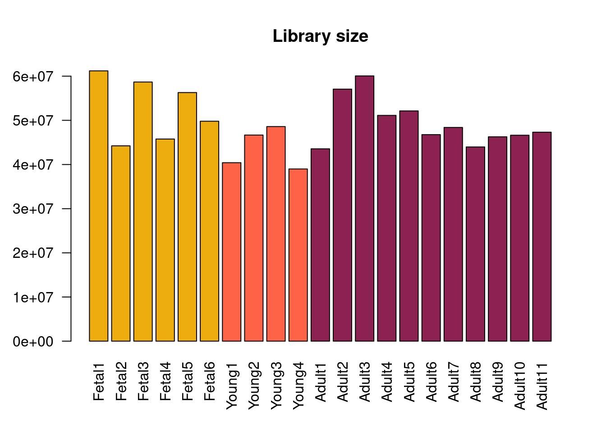
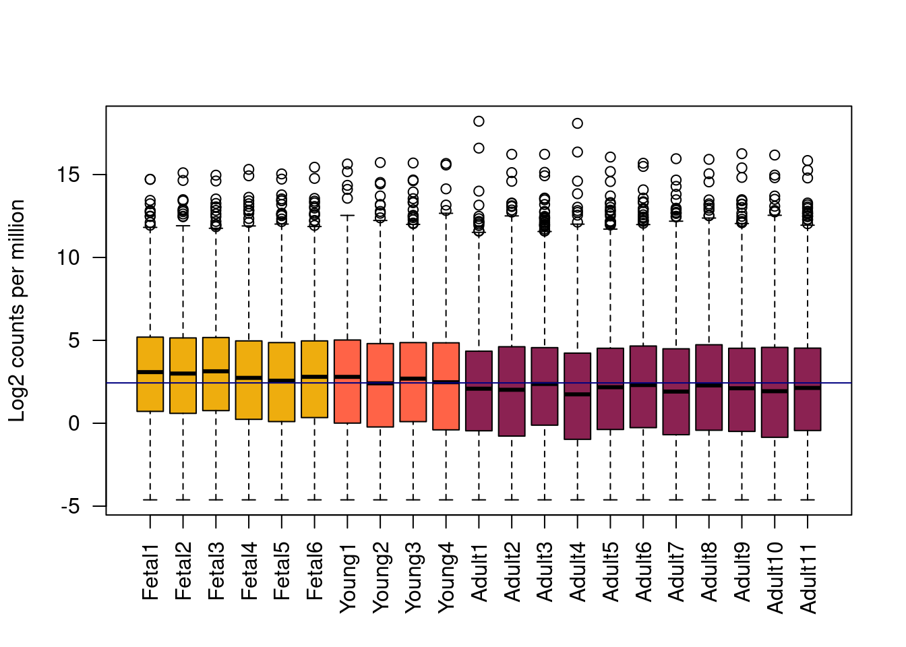

Last updated: 2021-02-19
Checks: 6 1
Knit directory: Human_Development_RNAseq_bulk/
This reproducible R Markdown analysis was created with workflowr (version 1.6.2). The Checks tab describes the reproducibility checks that were applied when the results were created. The Past versions tab lists the development history.
Great! Since the R Markdown file has been committed to the Git repository, you know the exact version of the code that produced these results.
Great job! The global environment was empty. Objects defined in the global environment can affect the analysis in your R Markdown file in unknown ways. For reproduciblity it’s best to always run the code in an empty environment.
The command set.seed(20210219) was run prior to running the code in the R Markdown file. Setting a seed ensures that any results that rely on randomness, e.g. subsampling or permutations, are reproducible.
Great job! Recording the operating system, R version, and package versions is critical for reproducibility.
Nice! There were no cached chunks for this analysis, so you can be confident that you successfully produced the results during this run.
Using absolute paths to the files within your workflowr project makes it difficult for you and others to run your code on a different machine. Change the absolute path(s) below to the suggested relative path(s) to make your code more reproducible.
| absolute | relative |
|---|---|
| /group/card2/Evangelyn_Sim/Transcriptome_chromatin_human/Sequencing_ATAC_RNA/GITHUB/Human_Development_RNAseq_bulk/output/hrna_dev_mf_fulllen_se_strrev_q30.mx.all.fix_filt.csv | output/hrna_dev_mf_fulllen_se_strrev_q30.mx.all.fix_filt.csv |
| /group/card2/Evangelyn_Sim/Transcriptome_chromatin_human/Sequencing_ATAC_RNA/GITHUB/Human_Development_RNAseq_bulk/output/RNAseq_samplesheet.txt | output/RNAseq_samplesheet.txt |
| /group/card2/Evangelyn_Sim/Transcriptome_chromatin_human/Sequencing_ATAC_RNA/GITHUB/Human_Development_RNAseq_bulk/output/logCPM_hrna_dev_mf_fulllen_se_strrev_q30.mx.all.fix_filt.csv | output/logCPM_hrna_dev_mf_fulllen_se_strrev_q30.mx.all.fix_filt.csv |
Great! You are using Git for version control. Tracking code development and connecting the code version to the results is critical for reproducibility.
The results in this page were generated with repository version cd389d4. See the Past versions tab to see a history of the changes made to the R Markdown and HTML files.
Note that you need to be careful to ensure that all relevant files for the analysis have been committed to Git prior to generating the results (you can use wflow_publish or wflow_git_commit). workflowr only checks the R Markdown file, but you know if there are other scripts or data files that it depends on. Below is the status of the Git repository when the results were generated:
Ignored files:
Ignored: .Rproj.user/
Untracked files:
Untracked: Homo_sapiens.GRCh38.96.fulllength.saf
Untracked: analysis/00.WorkFlowR_setting.R
Untracked: header.txt
Untracked: output/RNAseq Trimming and Mapping output.jpg
Untracked: output/RNAseq_samplesheet.txt
Untracked: output/hrna_dev_mf_fulllen_se_strrev_q30.mx.all.MvsF.fix_filt.csv
Untracked: output/hrna_dev_mf_fulllen_se_strrev_q30.mx.all.fix_filt.csv
Untracked: output/hrna_dev_mf_fulllen_se_strrev_q30.mx.all_unfiltered.csv
Untracked: output/hrna_dev_mf_fulllen_se_strrev_q30.mx.chr
Untracked: output/logCPM_hrna_dev_mf_fulllen_se_strrev_q30.mx.all.fix_filt.csv
Unstaged changes:
Modified: README.md
Note that any generated files, e.g. HTML, png, CSS, etc., are not included in this status report because it is ok for generated content to have uncommitted changes.
These are the previous versions of the repository in which changes were made to the R Markdown (analysis/03.QC_and_CPM.Rmd) and HTML (docs/03.QC_and_CPM.html) files. If you’ve configured a remote Git repository (see ?wflow_git_remote), click on the hyperlinks in the table below to view the files as they were in that past version.
| File | Version | Author | Date | Message |
|---|---|---|---|---|
| Rmd | cd389d4 | evangelynsim | 2021-02-19 | wflow_publish(c(“analysis/01.Generate_reference_genome.Rmd”, |
In the GEO submission 3 processed files were uploaded.
They have been uploaded in the /output folder and will be used below to generate different figures.
library(edgeR)Loading required package: limmalibrary(limma)
library(Glimma)
library(gplots)
Attaching package: 'gplots'The following object is masked from 'package:stats':
lowessrm1 <- read.csv("/group/card2/Evangelyn_Sim/Transcriptome_chromatin_human/Sequencing_ATAC_RNA/GITHUB/Human_Development_RNAseq_bulk/output/hrna_dev_mf_fulllen_se_strrev_q30.mx.all.fix_filt.csv", row.names = 1)
info = read.delim("/group/card2/Evangelyn_Sim/Transcriptome_chromatin_human/Sequencing_ATAC_RNA/GITHUB/Human_Development_RNAseq_bulk/output/RNAseq_samplesheet.txt", header = TRUE, sep = "\t")
m = match(info$ID,names(rm1))
rm2 = rm1[,m]
rm1 = rm2
mycpm = cpm(rm1)
summary(mycpm) Fetal1 Fetal2 Fetal3 Fetal4
Min. : 0.000 Min. : 0.00 Min. : 0.00 Min. : 0.00
1st Qu.: 1.605 1st Qu.: 1.47 1st Qu.: 1.65 1st Qu.: 1.14
Median : 8.431 Median : 7.94 Median : 8.73 Median : 6.62
Mean : 54.448 Mean : 54.45 Mean : 54.45 Mean : 54.45
3rd Qu.: 36.557 3rd Qu.: 35.36 3rd Qu.: 35.99 3rd Qu.: 31.24
Max. :26895.478 Max. :35265.37 Max. :31887.65 Max. :40646.07
Fetal5 Fetal6 Young1 Young2
Min. : 0.00 Min. : 0.00 Min. : 0.00 Min. : 0.00
1st Qu.: 1.03 1st Qu.: 1.22 1st Qu.: 0.97 1st Qu.: 0.81
Median : 5.88 Median : 6.92 Median : 6.90 Median : 5.27
Mean : 54.45 Mean : 54.45 Mean : 54.45 Mean : 54.45
3rd Qu.: 29.09 3rd Qu.: 31.21 3rd Qu.: 32.44 3rd Qu.: 27.88
Max. :33640.91 Max. :44477.77 Max. :50920.65 Max. :54059.52
Young3 Young4 Adult1 Adult2
Min. : 0.00 Min. : 0.00 Min. : 0.00 Min. : 0.00
1st Qu.: 1.03 1st Qu.: 0.72 1st Qu.: 0.69 1st Qu.: 0.54
Median : 6.41 Median : 5.51 Median : 4.20 Median : 4.01
Mean : 54.45 Mean : 54.45 Mean : 54.45 Mean : 54.45
3rd Qu.: 29.10 3rd Qu.: 28.79 3rd Qu.: 20.31 3rd Qu.: 24.44
Max. :53094.50 Max. :52056.09 Max. :304053.04 Max. :76411.57
Adult3 Adult4 Adult5 Adult6
Min. : 0.00 Min. : 0.00 Min. : 0.00 Min. : 0.00
1st Qu.: 0.88 1st Qu.: 0.47 1st Qu.: 0.73 1st Qu.: 0.79
Median : 5.12 Median : 3.31 Median : 4.47 Median : 4.90
Mean : 54.45 Mean : 54.45 Mean : 54.45 Mean : 54.45
3rd Qu.: 23.54 3rd Qu.: 18.72 3rd Qu.: 22.94 3rd Qu.: 25.23
Max. :76477.86 Max. :278442.84 Max. :68068.79 Max. :52599.18
Adult7 Adult8 Adult9 Adult10
Min. : 0.00 Min. : 0.00 Min. : 0.00 Min. : 0.00
1st Qu.: 0.58 1st Qu.: 0.70 1st Qu.: 0.67 1st Qu.: 0.51
Median : 3.72 Median : 4.82 Median : 4.27 Median : 3.77
Mean : 54.45 Mean : 54.45 Mean : 54.45 Mean : 54.45
3rd Qu.: 22.44 3rd Qu.: 26.55 3rd Qu.: 22.95 3rd Qu.: 23.82
Max. :63496.93 Max. :61823.40 Max. :78336.05 Max. :74051.19
Adult11
Min. : 0.00
1st Qu.: 0.70
Median : 4.33
Mean : 54.45
3rd Qu.: 23.07
Max. :58908.31 x <- DGEList(rm1)
names(x)[1] "counts" "samples"logcountsx = cpm(x, log = T)
write.csv(logcountsx, file = "/group/card2/Evangelyn_Sim/Transcriptome_chromatin_human/Sequencing_ATAC_RNA/GITHUB/Human_Development_RNAseq_bulk/output/logCPM_hrna_dev_mf_fulllen_se_strrev_q30.mx.all.fix_filt.csv")
barplot(x$samples$lib.size, names=colnames(x), las=2, col = c("violetred4","darkgoldenrod2","tomato")[info$Group], main = "Library size")
boxplot(logcountsx, xlab="", ylab="Log2 counts per million", las=2, col = c("violetred4","darkgoldenrod2","tomato")[info$Group])
abline(h=median(logcountsx), col="navy")
sessionInfo()R version 3.6.1 (2019-07-05)
Platform: x86_64-pc-linux-gnu (64-bit)
Running under: CentOS Linux 7 (Core)
Matrix products: default
BLAS: /hpc/software/installed/R/3.6.1/lib64/R/lib/libRblas.so
LAPACK: /hpc/software/installed/R/3.6.1/lib64/R/lib/libRlapack.so
locale:
[1] LC_CTYPE=en_US.UTF-8 LC_NUMERIC=C
[3] LC_TIME=en_US.UTF-8 LC_COLLATE=en_US.UTF-8
[5] LC_MONETARY=en_US.UTF-8 LC_MESSAGES=en_US.UTF-8
[7] LC_PAPER=en_US.UTF-8 LC_NAME=C
[9] LC_ADDRESS=C LC_TELEPHONE=C
[11] LC_MEASUREMENT=en_US.UTF-8 LC_IDENTIFICATION=C
attached base packages:
[1] stats graphics grDevices utils datasets methods base
other attached packages:
[1] gplots_3.1.0 Glimma_1.12.0 edgeR_3.26.8 limma_3.40.6
[5] workflowr_1.6.2
loaded via a namespace (and not attached):
[1] Rcpp_1.0.5 pillar_1.4.6 compiler_3.6.1 later_1.1.0.1
[5] git2r_0.27.1 highr_0.8 bitops_1.0-6 tools_3.6.1
[9] digest_0.6.27 jsonlite_1.7.0 evaluate_0.14 lifecycle_0.2.0
[13] tibble_3.0.3 lattice_0.20-41 pkgconfig_2.0.3 rlang_0.4.7
[17] rstudioapi_0.11 yaml_2.2.1 xfun_0.18 stringr_1.4.0
[21] knitr_1.30 caTools_1.18.0 gtools_3.8.2 fs_1.5.0
[25] vctrs_0.3.2 locfit_1.5-9.4 rprojroot_1.3-2 grid_3.6.1
[29] glue_1.4.2 R6_2.5.0 rmarkdown_2.5 magrittr_1.5
[33] whisker_0.4 backports_1.1.10 promises_1.1.1 ellipsis_0.3.1
[37] htmltools_0.5.0 httpuv_1.5.4 KernSmooth_2.23-17 stringi_1.5.3
[41] crayon_1.3.4